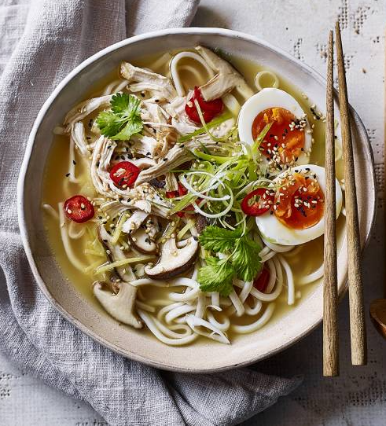

Cheat’s chicken ramen
Ingredients
- 1.2l good-quality chicken stock
- small pack coriander, stalks and leaves separated.
- 1 red chilli (deseeded if you don’t like it too hot), sliced
- 2 tbsp light soy sauce
- 100g grey oyster mushrooms, sliced
- 100g pack baby pak choi
- 2 skinless cooked chicken breasts, sliced
- 100g egg noodles
- 50g sliced bamboo shoots